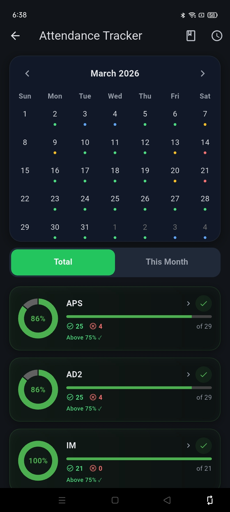
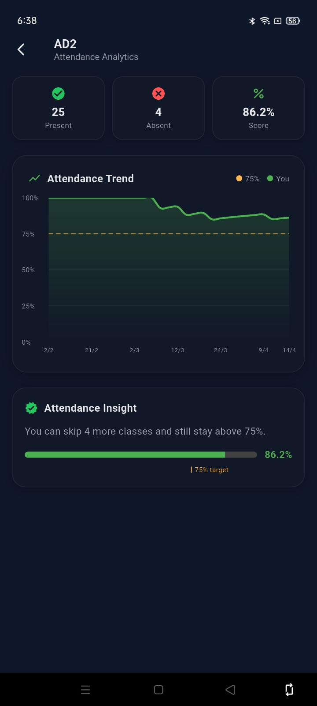
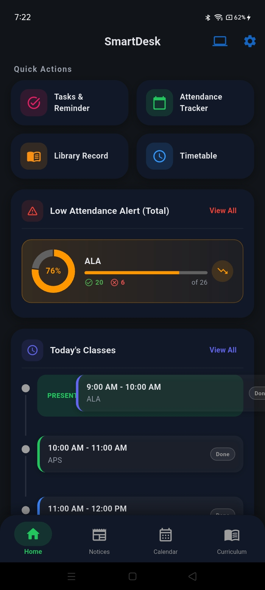
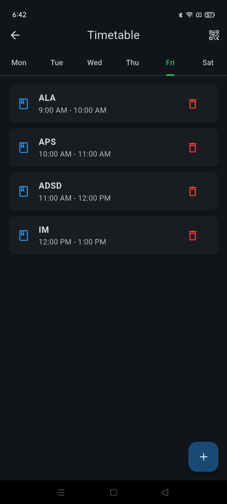
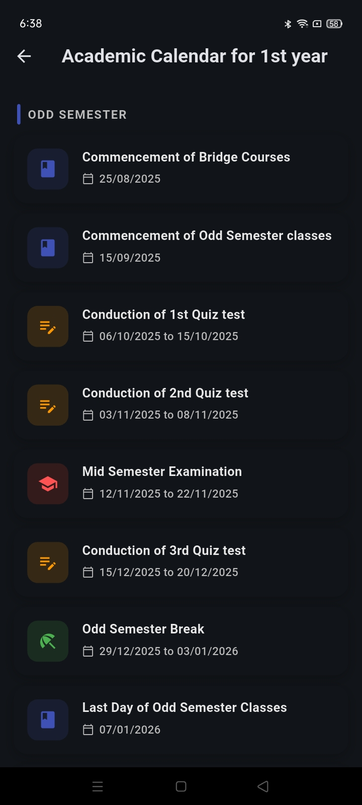
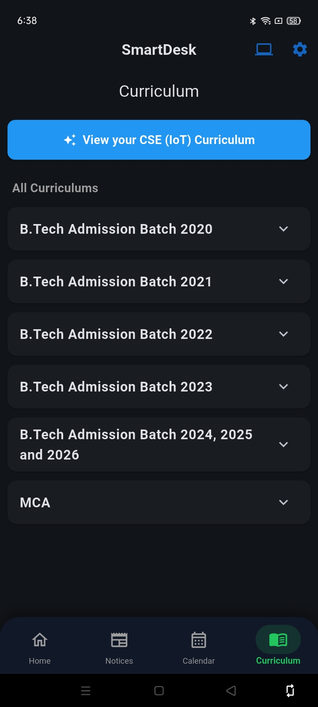
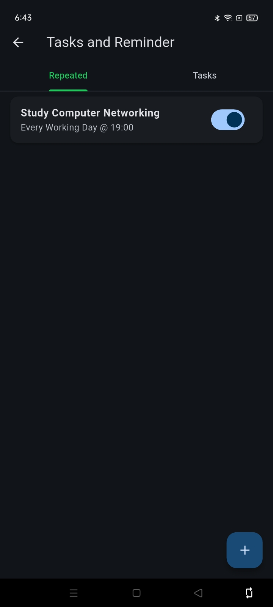
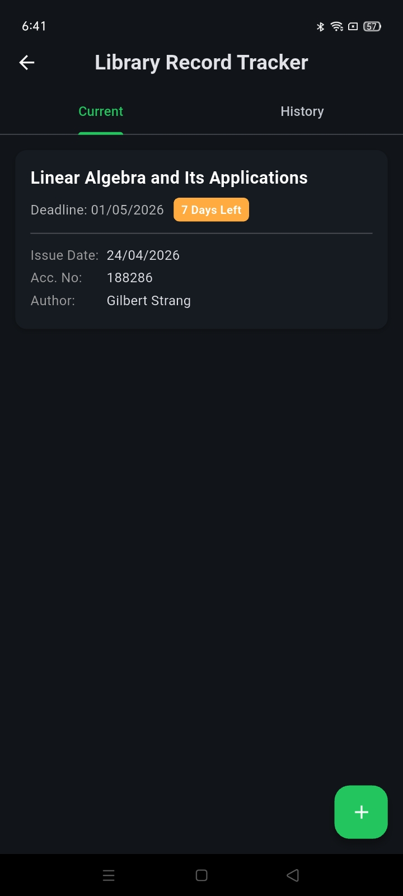

Dominate Your Semester at ITER.
Built specifically for ITERians. Track your attendance threshold, manage your class schedule, and conquer your exams with the ultimate campus tool.

Built specifically for ITERians. Track your attendance threshold, manage your class schedule, and conquer your exams with the ultimate campus tool.
SmartDesk replaces multiple messy apps with a single, premium interface designed for the SOA student lifestyle.
Stay safely above the 75% threshold. SmartDesk calculates exactly how many more classes you can skip or must attend to reach your attendance goals.



Stop typing numbers. Our intuitive gesture system lets you update your daily records in seconds during your walk between blocks.
Easily set up your Monday–Saturday schedule directly in the app, or send your section's timetable to us and we'll add it to the cloud for you!



Stay synchronized with the ITER schedule. From Internal exams to semester breaks, know what's coming before it arrives.
Manage your lab records and assignments. Build consistency with daily reminders integrated directly into your workflow.


Avoid hefty ITER library fines with our manual log system. Add your book details and accession number, and let SmartDesk handle the countdown for you.
The SmartDesk home screen is more than a dashboard — it's your academic brain. It instantly flags low attendance, displays your next class block, and lists today's urgent tasks.